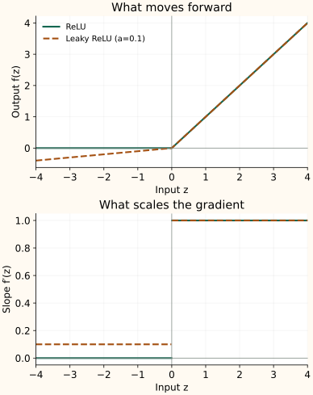

ReLU, Leaky ReLU, and PReLU: What Happens Below Zero?
ReLU keeps positive inputs unchanged and sets negative inputs to zero. Its simplicity gives us a clear starting point: we can see exactly which values and gradients pass through.
A two-part rule
For a negative input the curve is flat, so the local gradient is zero. For a positive input its slope is one. At exactly zero the mathematical derivative is undefined; an implementation selects a convention, commonly zero.
ReLU produces exact zeros, giving sparse activations. The rectifier study by Glorot, Bordes, and Bengio examines learning with this behavior. Sparse values do not automatically make a dense matrix multiplication faster; the implementation must exploit the zeros.
When can a unit stop learning?
If a unit's preactivation stays negative for every training example, gradients through that activation are zero. Its incoming parameters receive no gradient from that path. This is the “dying ReLU” problem.
A negative value on one example is ordinary behavior, not a dead unit. Changes in upstream features or other update terms can also alter the preactivation later. Watch the fraction of positive preactivations over data before diagnosing the problem.
Keep a small slope on the negative side
Leaky ReLU replaces the flat branch with a line of slope $a$, usually chosen between zero and one:
On the negative side, $f^\prime(z)=a$ instead of zero. With $a=0.1$, an input of −1 becomes −0.1, and the gradient through the activation is multiplied by 0.1. This provides a gradient path without making its strength equal to the positive branch.
| Function | −1 | 0 | 1 |
|---|---|---|---|
| ReLU | 0.0000 | 0.0000 | 1.0000 |
| Leaky ReLU (a=0.1) | -0.1000 | 0.0000 | 1.0000 |


Let training choose the negative slope
PReLU uses the same piecewise formula but learns $a$. It can share one slope across channels or give each channel its own. For a negative input, differentiating $az$ with respect to $a$ gives $z$:
The sum is over values sharing that parameter. Positive inputs do not use $a$ and contribute zero to its gradient. Unless explicitly constrained, a learned slope need not stay between zero and one. The PReLU paper also connects rectifier behavior to initialization.
Advantages and disadvantages
| Function | Advantages | Disadvantages |
|---|---|---|
| ReLU | Simple to compute, preserves positive inputs with slope 1, and produces exact zeros for sparse activations. | Persistent negative inputs can block a unit's gradient path. It has a corner at zero and unbounded positive outputs; sparse values do not automatically speed up dense kernels. |
| Leaky ReLU | With $a>0$, keeps a negative-side gradient path using only a fixed multiplication instead of a flat zero branch. | The slope must be chosen. A tiny slope can still weaken gradients; negative values no longer become exact zeros, and the corner remains when $a\ne1$. |
| PReLU | Learns the negative slope rather than fixing it by hand; slopes can be shared or learned per channel. | Adds trainable parameters. An unconstrained slope can leave the intended range or become zero, so a useful negative gradient is not guaranteed. |
Match initialization to the slope
For symmetric inputs and a fixed negative slope, leaky ReLU retains a fraction $(1+a^2)/2$ of the input second moment. Under the usual initialization assumptions, this motivates weight variance $2/[(1+a^2)n_{\mathrm{in}}]$, where $n_{\mathrm{in}}$ is the number of inputs to a unit. At $a=0$, this becomes the ReLU He rule.
This concerns the average squared activation, not necessarily its variance. The initialization guide explains the distinction. Next, Softplus, ELU, and SELU replace or reshape the sharp transition.